Download dist_RMS.zip File
अपने Computer में Anti-Virus का उपयोग न करें।
Anti-Virus RMSSOFT की Files को Delete, कर सकता है।
जिससे RMSSOFT चलना बंद कर सकता है, और फिर से Installation की आवश्यक्ता पड़ेगी।
इसलिये अपने Computer में Anti-Virus का उपयोग न करें।
अगर Anti-Virus है तो उसे Disable/Deactivate/हटा दें, कर दें ।
.
(a): Fill All Required Fields
सभी जरूरी जानकारियां भरें।
(b): Select Download Type
जिस तरह का Download करना चाहते हों चुने।
(c): Submit
Submit का बटन दबाएं ।
(d): Press Click to Download -> Download will Start
Click to Download का link दिखेगा उसे दबाएं, आप का Download शुरू हो जायेगा ।
(e): After Download Finish. Copy & Paste File to D:/ or E:/ Directory
जब Download पूरा हो जायेगा, तब उसे (dist_RMS.zip) file को D:/ या E:/ Drive में ले जा कर रख दें।
(1): Downloaded dist_RMS.zip
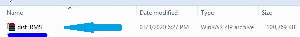
(2): Extract dist_RMS.zip
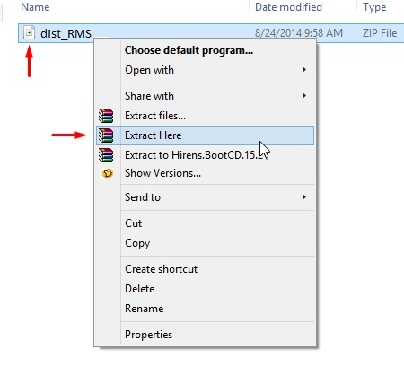
(3): Extract dist_RMS.zip ->>> RMS_INSTALLER | folder/directory will appear
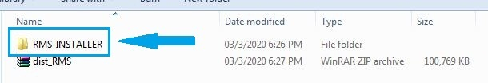
(4): Open RMS_INSTALLER directory and run or double click rmsinstaller Application
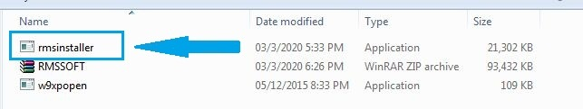
(5): Open or Run/double click rmsinstaller Application
छोटे अक्षर में pass लिखना है फिर EnterKey दबाना है ।
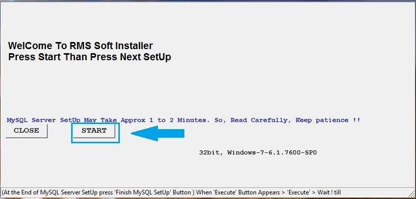
(6): Press NEXT
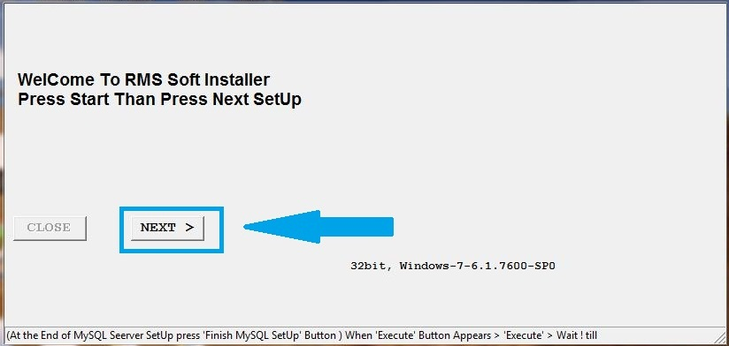
(7): Press INSTALL [MySQL Server SetUp Start]
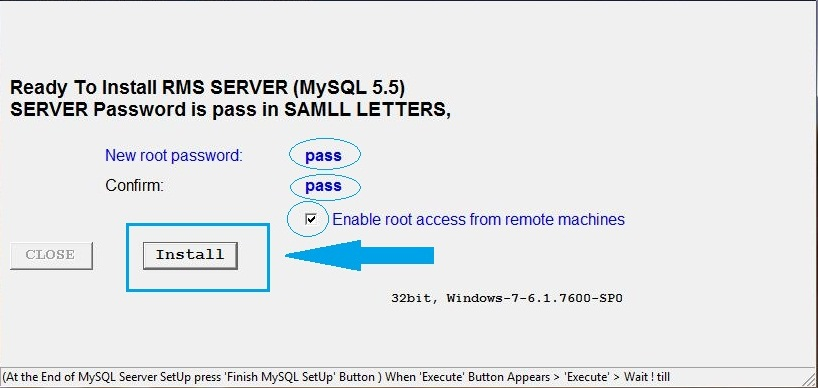
(8): See Below Image and Press Next as same as Shown in Below Images Carefully
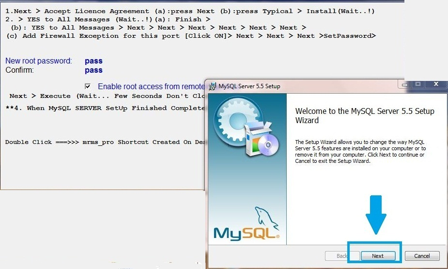
(9): Add Firewall Exception YES; pass in samll letters is password; root access is YES
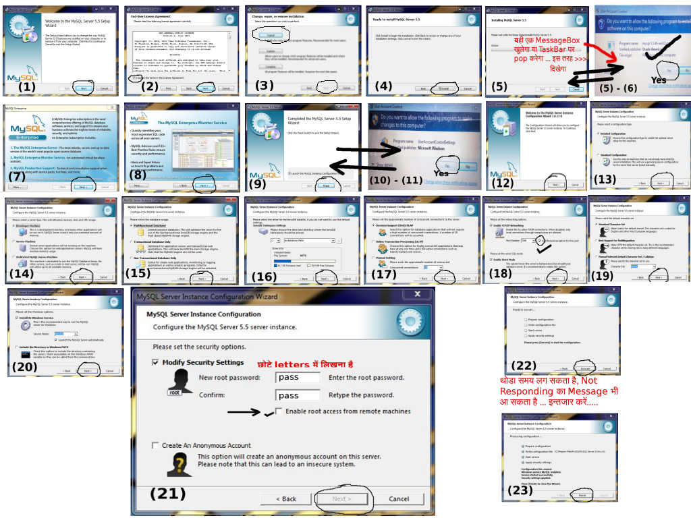
(10): Press Finish MySQL SetUp
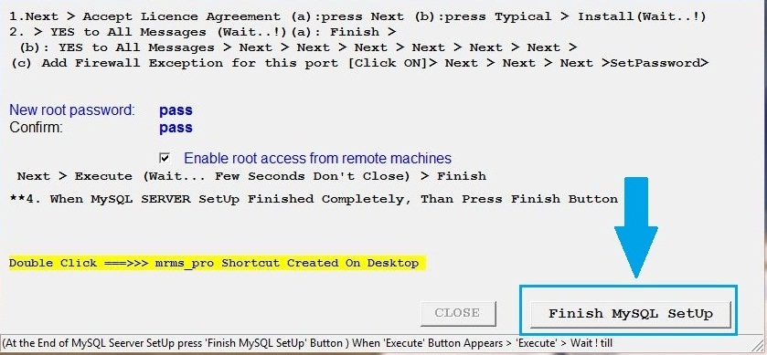
(11): Select Your Trade Type and Press Confirm; RMS will configure SetUp
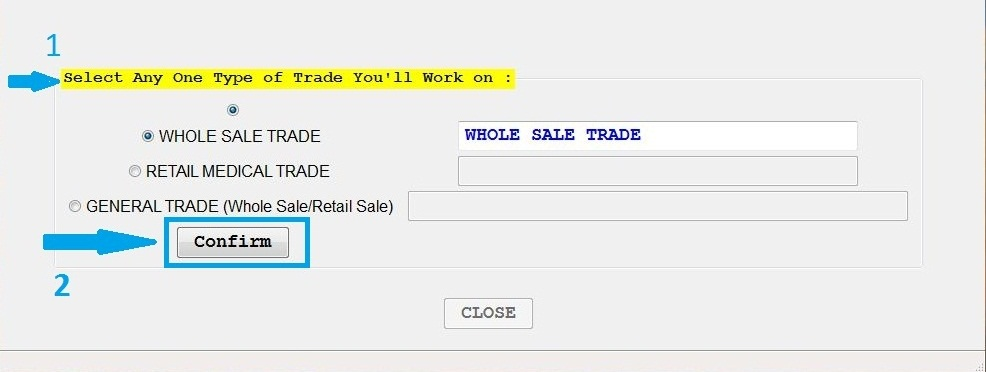
(12): After RMS Configure; Press Close
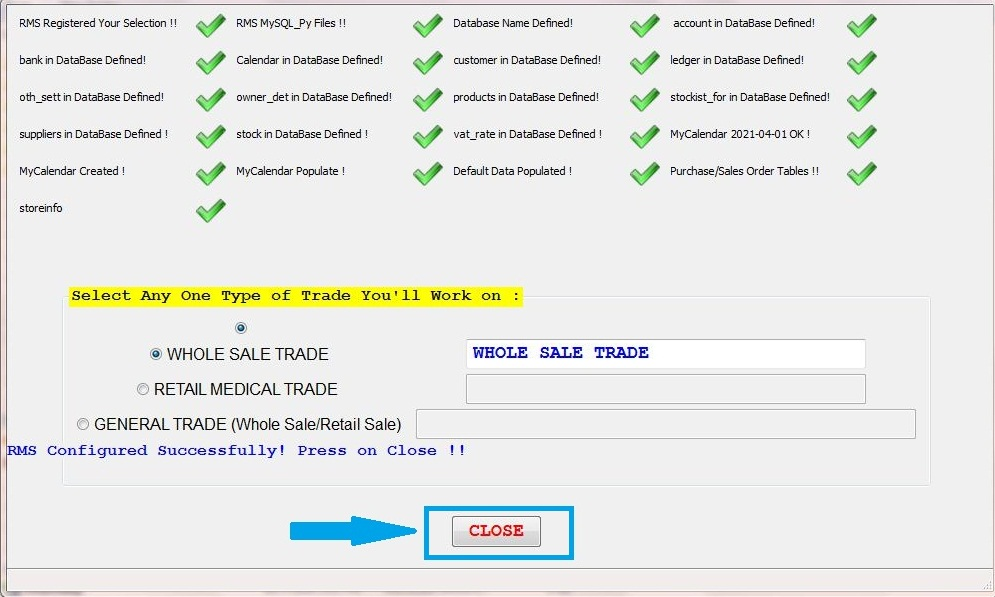
(13): USER ID = pass ; USER PASSWORD = pass
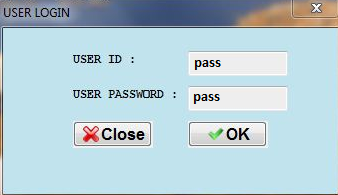
(14): SELECT current Finencial Year to Work; than Press Enter
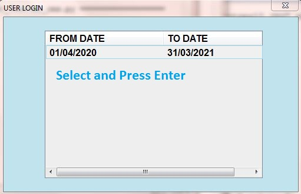
(15): अगर RMS/MySQL Server गलत Install हो गया है और आप दुबारा Install करना चाहते हैं
तो पहले पुराना Server Un-Install करना होगा,
अन्यथा आप दुबारा Installation नहीं कर सकते।
पुराना Server Un-Install करने की प्रक्रिया 2-दो चरण में पूरी होगी।
1. चरण Control Panel पर जा कर MySql Server Un-Install करें (नीचे दिए गए चित्र में देखें) ।
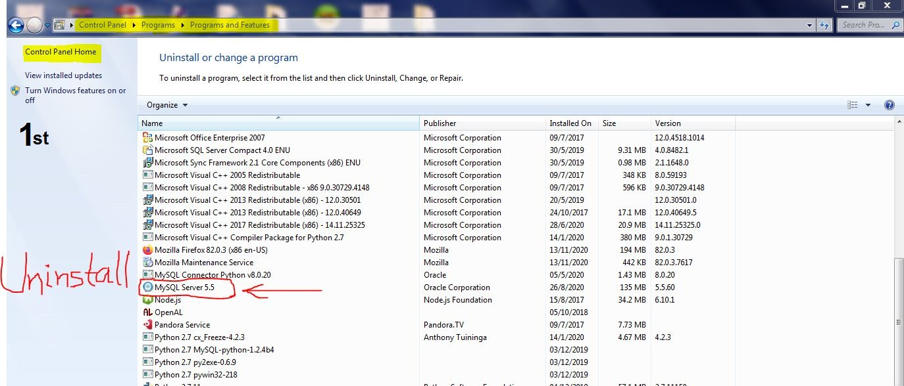
2. चरण Computer की C Drive के Address Bar पर जा कर ProgramData लिखें (यह एक छुपी हुई/Hidden डायरेक्टरी होती है)
C:\ProgramData लिख कर Enter Key दबाएं (नीचे दिए गए चित्र में देखें)
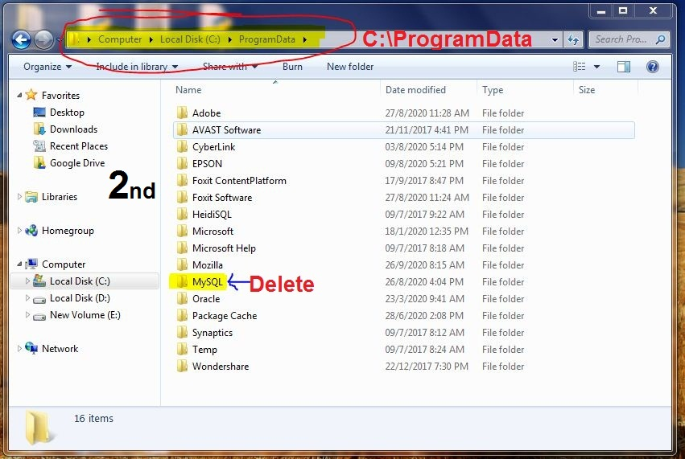
कई सारे Folder में से एक MySQL नाम का Folder होगा, उसे Delete कर दें।
3. चरण अब अपने कंप्यूटर को Re-Start करें।
दुबारा Re-Start होने पर फिर से नया RMS INSTALLATION कर सकते हैं।